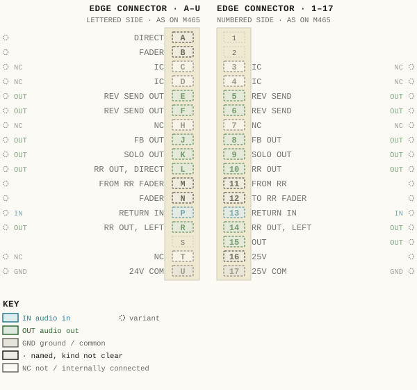
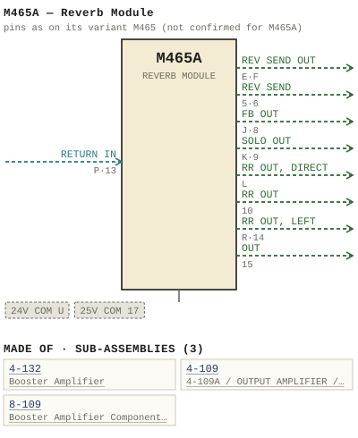

M465A — Reverb Module
| Type | module |
| Category | DYNAMICS |
| Try it | simulator & front panel · download package (zip) |
| Earliest dated evidence | 1977|10 — title-block date |
| Evidence | "ISSUE 01 oct. 1977" in PUBLIC/Manuals + tech DOCUMENTS/Modules/M465 - M465A - M465B - Reverb Module/M465A - REVERB MODULE /WBS M465A p2.JPG |
| Confidence | high |
| All years found | 1977|10 |
| Variants | M465, M465B |
| Folder | DOCUMENTS/RECENT SCANS/WBSps.ca 20210317 - Small 11X17 drawings |
| Folder | Modules/DYNAMICS/M465A |
Connections
What it is made of and what it is part of.
Pictures


M465A.pinout.svg

M465A.connections.svg 1977 - M465A - p2.jpg
1977 - M465A - p2.jpg 1977 - M465A - 4-132-06-002.jpg
1977 - M465A - 4-132-06-002.jpg 1977 - M465A - 465-02-002.jpg
1977 - M465A - 465-02-002.jpg 1977 - M465A - 465-04-005 - RETPRETURAS CHE OUTPUT NOTE THAT THE SOLO OUTPUT.jpg
1977 - M465A - 465-04-005 - RETPRETURAS CHE OUTPUT NOTE THAT THE SOLO OUTPUT.jpg 1977 - M465A - B 465-01-002 - M465A - REVERB MODULE - FUNCTIONAL DIAGRAM.jpg
1977 - M465A - B 465-01-002 - M465A - REVERB MODULE - FUNCTIONAL DIAGRAM.jpg 1977 - M465A - p1.jpg
1977 - M465A - p1.jpg 1977 - M465A - p3.jpg
1977 - M465A - p3.jpg 1977 - M465A - p4.jpg
1977 - M465A - p4.jpg 1977 - M465A - p5.jpg
1977 - M465A - p5.jpg 1977 - M465A - p6.jpg
1977 - M465A - p6.jpg 1977 - M465A - p7.jpg
1977 - M465A - p7.jpg 19xx - DOC - 465-02-002 - FIMISH REVERB MODULE SCHEMATIC IOLS.png
19xx - DOC - 465-02-002 - FIMISH REVERB MODULE SCHEMATIC IOLS.pngPinout & connections
No page of its own numbers M465A's contacts: these are its variant M465's, drawn faded — not confirmed for M465A.
pinout (SVG) · connections (SVG) · pins (JSON)
Pin evidence — 31 contacts
| Pin | Signal | Kind | Confidence | Read from | Source |
|---|---|---|---|---|---|
| A | DIRECT | named, kind not clear | variant | drawing rows | 1974 - M465 - 465-04-003 - CONNECTOR REAR VIE…, p. 1 “row 1 of the drawing, left of the pin column” |
| B | FADER | named, kind not clear | variant | drawing rows | 1974 - M465 - 465-04-003 - CONNECTOR REAR VIE…, p. 1 “row 2 of the drawing, left of the pin column” |
| C | IC | not / internally connected | variant | drawing rows | 1974 - M465 - 465-04-003 - CONNECTOR REAR VIE…, p. 1 “row 3 of the drawing, left of the pin column” |
| 3 | IC | not / internally connected | variant | drawing rows | 1974 - M465 - 465-04-003 - CONNECTOR REAR VIE…, p. 1 “row 3 of the drawing, right of the pin column” |
| D | IC | not / internally connected | variant | drawing rows | 1974 - M465 - 465-04-003 - CONNECTOR REAR VIE…, p. 1 “row 4 of the drawing, left of the pin column” |
| 4 | IC | not / internally connected | variant | drawing rows | 1974 - M465 - 465-04-003 - CONNECTOR REAR VIE…, p. 1 “row 4 of the drawing, right of the pin column” |
| E | REV SEND OUT | audio out | variant | drawing rows | 1974 - M465 - 465-04-003 - CONNECTOR REAR VIE…, p. 1 “row 5 of the drawing, left of the pin column” |
| 5 | REV SEND | audio out | variant | drawing rows | 1974 - M465 - 465-04-003 - CONNECTOR REAR VIE…, p. 1 “row 5 of the drawing, right of the pin column” |
| F | REV SEND OUT | audio out | variant | drawing rows | 1974 - M465 - 465-04-003 - CONNECTOR REAR VIE…, p. 1 “row 6 of the drawing, left of the pin column” |
| 6 | REV SEND | audio out | variant | drawing rows | 1974 - M465 - 465-04-003 - CONNECTOR REAR VIE…, p. 1 “row 6 of the drawing, right of the pin column” |
| H | NC | not / internally connected | variant | drawing rows | 1974 - M465 - 465-04-003 - CONNECTOR REAR VIE…, p. 1 “row 7 of the drawing, left of the pin column” |
| 7 | NC | not / internally connected | variant | drawing rows | 1974 - M465 - 465-04-003 - CONNECTOR REAR VIE…, p. 1 “row 7 of the drawing, right of the pin column” |
| J | FB OUT | audio out | variant | drawing rows | 1974 - M465 - 465-04-003 - CONNECTOR REAR VIE…, p. 1 “row 8 of the drawing, left of the pin column” |
| 8 | FB OUT | audio out | variant | drawing rows | 1974 - M465 - 465-04-003 - CONNECTOR REAR VIE…, p. 1 “row 8 of the drawing, right of the pin column” |
| K | SOLO OUT | audio out | variant | drawing rows | 1974 - M465 - 465-04-003 - CONNECTOR REAR VIE…, p. 1 “row 9 of the drawing, left of the pin column” |
| 9 | SOLO OUT | audio out | variant | drawing rows | 1974 - M465 - 465-04-003 - CONNECTOR REAR VIE…, p. 1 “row 9 of the drawing, right of the pin column” |
| L | RR OUT, DIRECT | audio out | variant | drawing rows | 1974 - M465 - 465-04-003 - CONNECTOR REAR VIE…, p. 1 “row 10 of the drawing, left of the pin column” |
| 10 | RR OUT | audio out | variant | drawing rows | 1974 - M465 - 465-04-003 - CONNECTOR REAR VIE…, p. 1 “row 10 of the drawing, right of the pin column” |
| M | FROM RR FADER | named, kind not clear | variant | drawing rows | 1974 - M465 - 465-04-003 - CONNECTOR REAR VIE…, p. 1 “row 11 of the drawing, left of the pin column” |
| 11 | FROM RR | named, kind not clear | variant | drawing rows | 1974 - M465 - 465-04-003 - CONNECTOR REAR VIE…, p. 1 “row 11 of the drawing, right of the pin column” |
| N | FADER | named, kind not clear | variant | drawing rows | 1974 - M465 - 465-04-003 - CONNECTOR REAR VIE…, p. 1 “row 12 of the drawing, left of the pin column” |
| 12 | TO RR FADER | named, kind not clear | variant | drawing rows | 1974 - M465 - 465-04-003 - CONNECTOR REAR VIE…, p. 1 “row 12 of the drawing, right of the pin column” |
| P | RETURN IN | audio in | variant | drawing rows | 1974 - M465 - 465-04-003 - CONNECTOR REAR VIE…, p. 1 “row 13 of the drawing, left of the pin column” |
| 13 | RETURN IN | audio in | variant | drawing rows | 1974 - M465 - 465-04-003 - CONNECTOR REAR VIE…, p. 1 “row 13 of the drawing, right of the pin column” |
| R | RR OUT, LEFT | audio out | variant | drawing rows | 1974 - M465 - 465-04-003 - CONNECTOR REAR VIE…, p. 1 “row 14 of the drawing, left of the pin column” |
| 14 | RR OUT, LEFT | audio out | variant | drawing rows | 1974 - M465 - 465-04-003 - CONNECTOR REAR VIE…, p. 1 “row 14 of the drawing, right of the pin column” |
| 15 | OUT | audio out | variant | drawing rows | 1974 - M465 - 465-04-003 - CONNECTOR REAR VIE…, p. 1 “row 15 of the drawing, right of the pin column” |
| T | NC | not / internally connected | variant | drawing rows | 1974 - M465 - 465-04-003 - CONNECTOR REAR VIE…, p. 1 “row 16 of the drawing, left of the pin column” |
| 16 | 25V | named, kind not clear | variant | drawing rows | 1974 - M465 - 465-04-003 - CONNECTOR REAR VIE…, p. 1 “row 16 of the drawing, right of the pin column” |
| U | 24V COM | ground / common | variant | drawing rows | 1974 - M465 - 465-04-003 - CONNECTOR REAR VIE…, p. 1 “row 17 of the drawing, left of the pin column” |
| 17 | 25V COM | ground / common | variant | drawing rows | 1974 - M465 - 465-04-003 - CONNECTOR REAR VIE…, p. 1 “row 17 of the drawing, right of the pin column” |

Dates found in the documents
| Year | Kind | Text | File |
|---|---|---|---|
| 1977|10 | title-block date | ISSUE 01 oct. 1977 |
1977 - M465A - p2.jpg |
Photos & scans (13)


Sub-assemblies & parts used (3)
| Item | What | Family | Year | How we know |
|---|---|---|---|---|
| 4-132 | Booster Amplifier | Sub-assemblies (n-nnn) | 1977|10 | drawing filed with it |
| 4-109 | 4-109A / OUTPUT AMPLIFIER / SCHEMATIC | Sub-assemblies (n-nnn) | 1976|9 | named in its manual |
| 8-109 | Booster Amplifier Component Layout | Sub-assemblies (n-nnn) | 1974|7 | named in its manual |
From the manuals
Each manual split into its sections. Text that is the same in many Ward-Beck manuals (warranty, address, standard notes) is kept once on the Boilerplate page and linked.
Specifications (1)
Technical Data — 183 words · 1977 - M465A - p4.jpg, page 1
M465A REVERB MODULE Ga in: X Return: Send : 15 dB +0 . 5 dB _ 33 dB +0 .5 dB . x Frequency Response: +0.25 dB from 20 Hz to 20 kHz . . . ` ` No ise: Return: Send: 80 dB S/N 85 dB S/n (20 Hz :0 20 kHz ) be]ow nomina ] operating signa 1 Teve1 Harmonic Distortion: Less nan 0.252 from 20 Hz to 20 kHz 2t +28 dBm output Teve] or Tess Less than 0.16 at 1 kHz at +28 dBm output.
Source Impedances : 600 onm Or Tess , balanced . Input Impedances : 600 onm, palanced . Input Levels : -10 dBm nomina ] +30 dBm maximum. Output Impedances : Return Send : Less than 200 ohm, balanced. 600 ohm, balanced Load Impedances Return: Send 3 ,000 ohm minimum , each output ba Tanced 600 ohm, ba anced. Output Levels : Return Send : -10 dBm nomina ] +30 dBm maximum _ +8 dBm nomina ] +24 dBm maximum Phas ing : Input and output termina] s designated by numbers are in phase.
1-1
- source: 1977 - M465A - p4.jpg, p. 1
Drawings (4)
Each scan with its trace laid over it: the slider runs from the scan to the vector drawing. Click one to see it large and save it as SVG, DXF, KiCad, PDF or PowerPoint.
1977 - M465A - B 465-01-002 - M465A - REVERB MODULE - FUNCTIONAL DIAGRAMviewer
1977 - M465A - 465-02-002viewer
Fimish Reverb Module Schematic Iolsviewer
1977 - M465A - 4-132-06-002viewer
Retpreturas Che Output Note That The Solo Outputviewer
Read from the drawing title blocks.
| Drawing | Title | Date | Drawn by | Checked by | Iss. | Source |
|---|---|---|---|---|---|---|
| 4-132-06-002 | file | |||||
| 465-02-002 | file | |||||
| 465-02-002 | Fimish Reverb Module Schematic Iols | RSN | file | |||
| 465-04-005 | Retpreturas Che Output Note That The Solo Output | KUU | file |